Das kleine Glück
Startseite
Kalender
Briefkasten
Galerie
Blog
Impressum
Architektur in Graz
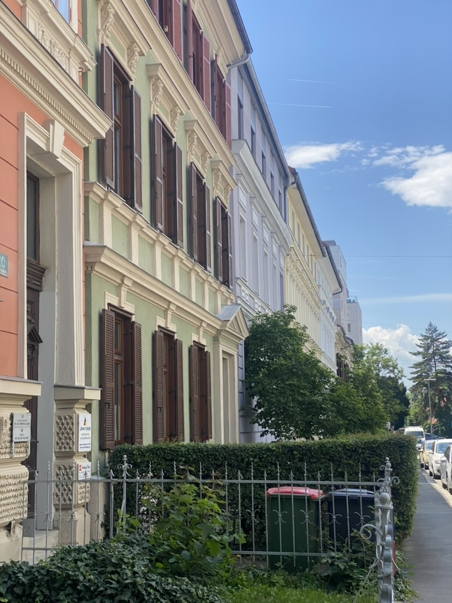
Bunte Häuserfassade im Stadtteil Geidorf
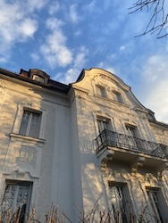
Schöne Hausfassade mit Balkon
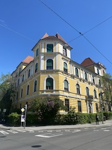
Haus im Stadtteil
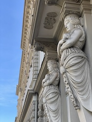
Prachtvolle Figuren
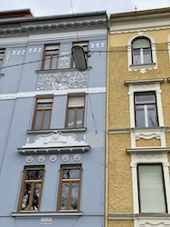
Blaue und gelbe Hausfassade
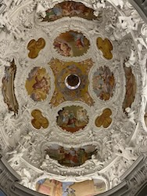
Die Decke des Mausoleums
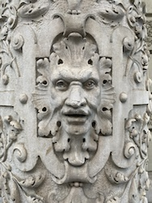
Fassaden-Gesicht
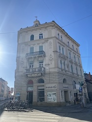
Haus nahe der Kunstuniversität
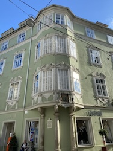
Grüne Hausfasse mit Erker
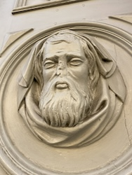
Fassaden Lord Voldemort
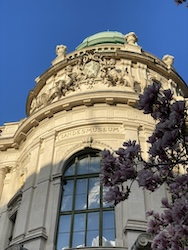
Landesmuseum
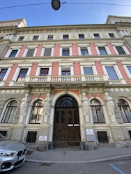
Prachtvolle rote Hausfassade mit Statuen
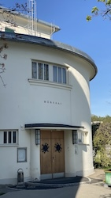
Hörsaal auf dem Gelände der Med Uni Graz
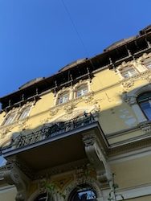
Gelbe Hausfassade
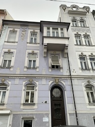
Lila Fassade
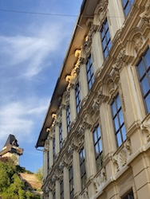
Prachtvolle Fassade beim Schlossbergplatz
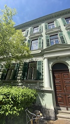
Schloss Eggenberg
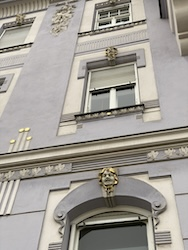
Köpfe an der Hauswand
Was ein Eingangsportal
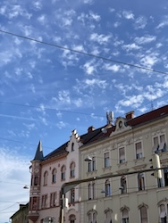
Häuserreihe